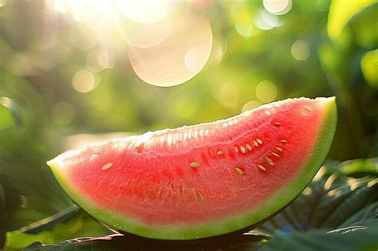
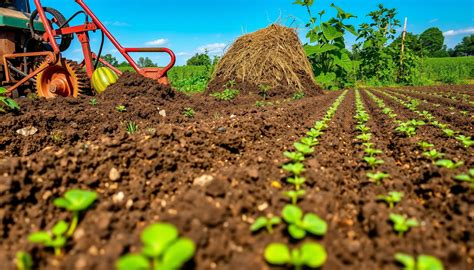
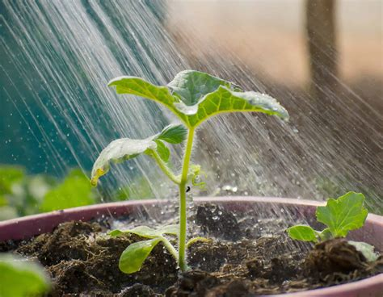
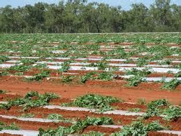
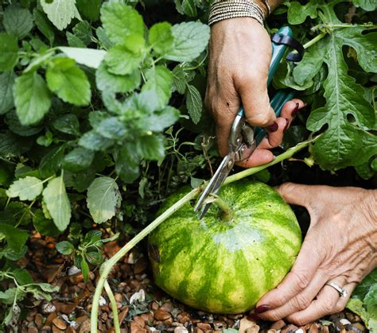

Growing Tips
Watermelons grow best in warm weather with plenty of sunlight and room to spread out. With the right soil, water, and care, they can produce sweet and refreshing fruit.
Sunlight

Watermelons need full sun for most of the day. A bright and warm location helps the vines grow strong and supports fruit development.
Soil

Loose, well-drained soil is best. Watermelons grow well in rich soil with organic matter that helps roots spread and stay healthy.
Watering

Water regularly while the plants are growing. Keep the soil moist, but avoid soaking it too much, especially when the melons are close to ripe.
Spacing

Watermelon vines spread out a lot, so they need space. Good spacing helps air flow and gives each plant room to grow.
Harvest

A watermelon is often ready when the underside turns creamy yellow and the fruit sounds hollow when tapped. Timing matters for the best flavor.